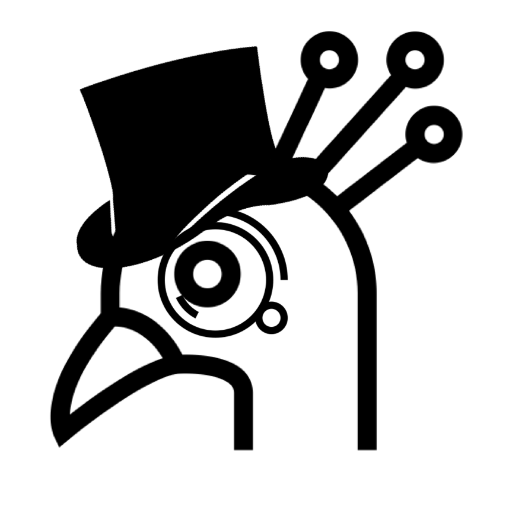

fancygraf
Graphs so fancy, you'll say "Dang, those are some fancy graphs!"

The Team
The magicians and technicians behind fancygraf
Joe Greaser
Chief Vision Mastermind
Megan Burkett
Content Futurist
Michelle McRae
Engagement Sage
Mike Jarrell
Mobile Platform Guru
TD Haines
Human Experience Minister

The Future
Stay in the loop and get a head start on the new features. Subscribe below!
Processing...
You are subscribed!
Another fine Innovation Team product